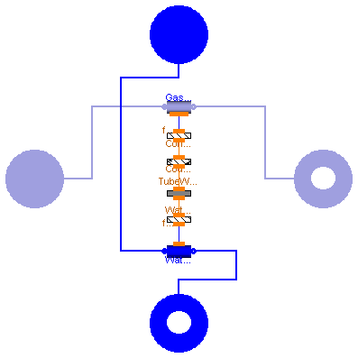
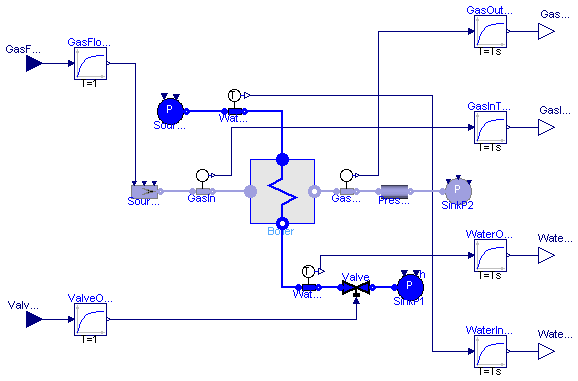

| Name | Description |
|---|---|
| Base class for heat exchanger fluid - gas | |
| HRBPlant | Simple plant model with HRB |
| Flow1DGashtc | Gas flow model with h.t.c. computation |
| DigitalPI | |
| Simulation models for the HRB example |
 ThermoPower.Examples.HRB.HeatExchanger
ThermoPower.Examples.HRB.HeatExchanger
| Type | Name | Default | Description |
|---|---|---|---|
| Boolean | StaticGasBalances | true | |
| Integer | Nr | 2 | Number of tube rows |
| Integer | Nt | 2 | Number of parallel tubes in each row |
| Length | Lt | Length of a tube in a row [m] | |
| Length | Dint | Internal diameter of each tube [m] | |
| Length | Dext | External diameter of each tube [m] | |
| Density | rhom | Density of the tube metal walls [kg/m3] | |
| SpecificHeatCapacity | cm | Specific heat capacity of the tube metal walls [J/(kg.K)] | |
| Area | Sb | Cross-section of the boiler [m2] | |
| Length | Lb | Length of the boiler [m] | |
| Area | St | Dext*pi*Lt*Nt*Nr | Total area of the heat exchange surface [m2] |
| CoefficientOfHeatTransfer | gamma_nom | 150 | Nominal heat transfer coefficient [W/(m2.K)] |
| Flow1DDB | WaterSide | redeclare Water.Flow1DDB Wat... |
| Type | Name | Description |
|---|---|---|
| FlangeA | gasIn | |
| FlangeB | gasOut | |
| FlangeA | waterIn | |
| FlangeB | waterOut |
model HeatExchanger "Base class for heat exchanger fluid - gas"
constant Real pi=Modelica.Constants.pi;
replaceable package GasMedium =
Modelica.Media.IdealGases.MixtureGases.CombustionAir extends
Modelica.Media.Interfaces.PartialMedium;
replaceable package WaterMedium=Water.StandardWater extends
Modelica.Media.Interfaces.PartialMedium;
parameter Boolean StaticGasBalances = true;
parameter Integer Nr=2 "Number of tube rows";
parameter Integer Nt=2 "Number of parallel tubes in each row";
parameter Length Lt "Length of a tube in a row";
parameter Length Dint "Internal diameter of each tube";
parameter Length Dext "External diameter of each tube";
parameter Density rhom "Density of the tube metal walls";
parameter SpecificHeatCapacity cm
"Specific heat capacity of the tube metal walls";
parameter Area Sb "Cross-section of the boiler";
parameter Length Lb "Length of the boiler";
parameter Area St= Dext*pi*Lt*Nt*Nr "Total area of the heat exchange surface";
parameter CoefficientOfHeatTransfer gamma_nom = 150
"Nominal heat transfer coefficient";
Gas.FlangeA gasIn(redeclare package Medium = GasMedium);
Gas.FlangeB gasOut(redeclare package Medium = GasMedium);
Water.FlangeA waterIn(redeclare package Medium = WaterMedium);
Water.FlangeB waterOut(redeclare package Medium = WaterMedium);
replaceable Water.Flow1DDB WaterSide(redeclare package Medium=WaterMedium, Nt=Nt,
A=pi*Dint^2/4,
omega=pi*Dint,
Dhyd=Dint,
wnom=20,
FFtype=2,
Cfnom=0.005,
L=Lt*Nr,
N=Nr + 1,
hstartin=1e5,
hstartout=2.7e5,
initOpt=ThermoPower.Choices.Init.Options.steadyState)
extends Water.Flow1D;
Thermal.ConvHT_htc WaterMetalHT(N=Nr + 1);
Thermal.MetalTube TubeWalls(
rint=Dint/2,
rext=Dext/2,
rhomcm=rhom*cm,
lambda=20,
L=Lt*Nr,
N=Nr + 1,
Tstart1=300,
TstartN=340,
initOpt=ThermoPower.Choices.Init.Options.steadyState) "Tube";
ThermoPower.Examples.HRB.Flow1DGashtc GasSide(
redeclare package Medium = GasMedium,
L=Lb,
omega=St/Lb,
wnom=10,
gamma_nom(start=gamma_nom) = gamma_nom,
A=Sb,
Dhyd=St/Lb,
N=Nr + 1,
FFtype=ThermoPower.Choices.Flow1D.FFtypes.NoFriction,
Tstartin=670,
Tstartout=370,
QuasiStatic=StaticGasBalances,
initOpt=ThermoPower.Choices.Init.Options.steadyState,
kw=0.6);
Thermal.CounterCurrent CounterCurrent1(N=Nr + 1);
Thermal.ConvHT_htc ConvHT_htc1(N=Nr + 1);
equation
connect(WaterMetalHT.fluidside,WaterSide. wall);
connect(TubeWalls.int,WaterMetalHT. otherside);
connect(CounterCurrent1.side2,TubeWalls. ext);
connect(CounterCurrent1.side1,ConvHT_htc1. otherside);
connect(ConvHT_htc1.fluidside,GasSide. wall);
connect(GasSide.infl, gasIn);
connect(GasSide.outfl, gasOut);
connect(WaterSide.outfl, waterOut);
connect(WaterSide.infl, waterIn);
end HeatExchanger;

| Type | Name | Default | Description |
|---|---|---|---|
| Time | Ts | 4 | Temperature sensor time constant [s] |
| Type | Name | Description |
|---|---|---|
| input RealInput | ValveOpening | |
| output RealOutput | WaterOut_T | |
| output RealOutput | WaterIn_T | |
| output RealOutput | GasOut_T | |
| output RealOutput | GasIn_T | |
| input RealInput | GasFlowRate |
model HRBPlant "Simple plant model with HRB"
replaceable package GasMedium =
Modelica.Media.IdealGases.MixtureGases.CombustionAir extends
Modelica.Media.Interfaces.PartialMedium;
replaceable package WaterMedium=Modelica.Media.Water.WaterIF97_ph extends
Modelica.Media.Interfaces.PartialMedium;
parameter Time Ts = 4 "Temperature sensor time constant";
HeatExchanger Boiler(
redeclare package GasMedium = GasMedium,
Nr=10,
Nt=100,
Lt=3,
Dint=0.01,
Dext=0.012,
rhom=7800,
cm=650,
Sb=8,
Lb=2,
redeclare package WaterMedium = WaterMedium,
StaticGasBalances=false,
WaterSide(pstartout=3.95e5, pstartin=5e5));
Water.ValveLin Valve(Kv=20/4e5, redeclare package Medium = WaterMedium);
Water.SinkP SinkP1(p0=1e5, redeclare package Medium = WaterMedium);
Gas.SourceW SourceW2( redeclare package Medium = GasMedium,
p0=1e5,
T=670,
w0=10);
Gas.SinkP SinkP2(redeclare package Medium = GasMedium,
T=300);
Gas.PressDropLin PressDropLin1(redeclare package Medium = GasMedium, R=
1000/10);
Water.SensT WaterIn(redeclare package Medium = WaterMedium);
Water.SensT WaterOut(redeclare package Medium = WaterMedium);
Gas.SensT GasOut(redeclare package Medium = GasMedium);
Gas.SensT GasIn(redeclare package Medium = GasMedium);
Water.SourceP SourceP1(p0=5e5, redeclare package Medium = WaterMedium);
Modelica.Blocks.Interfaces.RealInput ValveOpening;
Modelica.Blocks.Interfaces.RealOutput WaterOut_T;
Modelica.Blocks.Interfaces.RealOutput WaterIn_T;
Modelica.Blocks.Interfaces.RealOutput GasOut_T;
Modelica.Blocks.Interfaces.RealOutput GasIn_T;
Modelica.Blocks.Interfaces.RealInput GasFlowRate;
Modelica.Blocks.Continuous.FirstOrder GasFlowActuator(k=1, T=1,
y_start=5,
initType=Modelica.Blocks.Types.Init.SteadyState);
Modelica.Blocks.Continuous.FirstOrder WaterInTSensor(k=1, T=Ts,
initType=Modelica.Blocks.Types.Init.SteadyState,
y_start=296);
Modelica.Blocks.Continuous.FirstOrder WaterOutTSensor(k=1, T=Ts,
initType=Modelica.Blocks.Types.Init.SteadyState,
y_start=330);
Modelica.Blocks.Continuous.FirstOrder GasInTSensor(k=1, T=Ts,
initType=Modelica.Blocks.Types.Init.SteadyState,
y_start=670);
Modelica.Blocks.Continuous.FirstOrder GasOutTSensor(k=1, T=Ts,
initType=Modelica.Blocks.Types.Init.SteadyState,
y_start=350);
Modelica.Blocks.Continuous.FirstOrder ValveOpeningActuator(k=1, T=1,
initType=Modelica.Blocks.Types.Init.SteadyState,
y_start=1);
equation
connect(GasFlowActuator.y, SourceW2.in_w0);
connect(GasInTSensor.u, GasIn.T);
connect(GasOut.T, GasOutTSensor.u);
connect(GasOutTSensor.y, GasOut_T);
connect(WaterIn.T, WaterInTSensor.u);
connect(WaterOut.T, WaterOutTSensor.u);
connect(WaterOutTSensor.y, WaterOut_T);
connect(GasInTSensor.y, GasIn_T);
connect(Valve.cmd, ValveOpeningActuator.y);
connect(WaterInTSensor.y, WaterIn_T);
initial equation
der(GasFlowActuator.y)=0;
der(GasInTSensor.y)=0;
der(GasOutTSensor.y)=0;
der(ValveOpeningActuator.y)=0;
der(WaterInTSensor.y)=0;
der(WaterOutTSensor.y)=0;
equation
connect(WaterOut.inlet, Boiler.waterOut);
connect(Boiler.gasIn, GasIn.outlet);
connect(GasOut.inlet, Boiler.gasOut);
connect(Boiler.waterIn, WaterIn.outlet);
connect(SourceP1.flange, WaterIn.inlet);
connect(WaterOut.outlet, Valve.inlet);
connect(Valve.outlet, SinkP1.flange);
connect(PressDropLin1.outlet, SinkP2.flange);
connect(GasOut.outlet, PressDropLin1.inlet);
connect(SourceW2.flange, GasIn.inlet);
connect(GasFlowActuator.u, GasFlowRate);
connect(ValveOpeningActuator.u, ValveOpening);
end HRBPlant;
 ThermoPower.Examples.HRB.Flow1DGashtc
ThermoPower.Examples.HRB.Flow1DGashtc

| Type | Name | Default | Description |
|---|---|---|---|
| replaceable package Medium | Media.GenericGas | ||
| Integer | N | 2 | Number of nodes for thermal variables |
| Integer | Nt | 1 | Number of tubes in parallel |
| Distance | L | Tube length [m] | |
| Position | H | 0 | Elevation of outlet over inlet [m] |
| Area | A | Cross-sectional area (single tube) [m2] | |
| Length | omega | Perimeter of heat transfer surface (single tube) [m] | |
| Length | Dhyd | Hydraulic Diameter (single tube) [m] | |
| MassFlowRate | wnom | Nominal mass flowrate (total) [kg/s] | |
| Temp | FFtype | Friction Factor Type | |
| Real | Kfnom | 0 | Nominal hydraulic resistance coefficient |
| Pressure | dpnom | 0 | Nominal pressure drop [Pa] |
| Density | rhonom | 0 | Nominal inlet density [kg/m3] |
| Real | Cfnom | 0 | Nominal Fanning friction factor |
| Real | e | 0 | Relative roughness (ratio roughness/diameter) |
| Boolean | DynamicMomentum | false | Inertial phenomena accounted for |
| Boolean | UniformComposition | true | Uniform gas composition is assumed |
| Boolean | QuasiStatic | false | Quasi-static model (mass, energy and momentum static balances |
| Integer | HydraulicCapacitance | 2 | 1: Upstream, 2: Downstream |
| Boolean | avoidInletEnthalpyDerivative | true | Avoid inlet enthalpy derivative |
| Real | wnf | 0.01 | Fraction of nominal flow rate at which linear friction equals turbulent friction |
| Real | Kfc | 1 | Friction factor correction coefficient |
| CoefficientOfHeatTransfer | gamma_nom | Nominal h.t.c. coefficient [W/(m2.K)] | |
| Real | kw | Exponent of the mass flow rate in the h.t.c. correlation | |
| Initialisation | |||
| AbsoluteTemperature | Tstartin | 300 | Inlet temperature start value [K] |
| AbsoluteTemperature | Tstartout | 300 | Outlet temperature start value [K] |
| AbsoluteTemperature | Tstart[N] | linspace(Tstartin, Tstartout... | Start value of temperature vector (initialized by default) [K] |
| Pressure | pstart | 101325 | Pressure start value [Pa] |
| MassFraction | Xstart[nX] | Medium.reference_X | Start gas composition [1] |
| Temp | initOpt | Choices.Init.Options.noInit | Initialisation option |
| Type | Name | Description |
|---|---|---|
| FlangeA | infl | |
| FlangeB | outfl |
model Flow1DGashtc "Gas flow model with h.t.c. computation"
extends Gas.Flow1D( redeclare ThermoPower.Thermal.DHThtc wall);
parameter Modelica.SIunits.CoefficientOfHeatTransfer gamma_nom
"Nominal h.t.c. coefficient";
parameter Real kw "Exponent of the mass flow rate in the h.t.c. correlation";
equation
for j in 1:N loop
wall.gamma[j] = gamma_nom*noEvent(abs(infl.w/wnom)^kw);
end for;
end Flow1DGashtc;
| Type | Name | Default | Description |
|---|---|---|---|
| Time | samplePeriod | 0.1 | Sample period of component [s] |
| Time | startTime | 0 | First sample time instant [s] |
| Real | Kp | Gain | |
| Time | Ti | Integral time [s] | |
| Real | b | 1 | Set-point weight (proportional action) |
| Real | CSmax | Control signal saturation upper bound | |
| Real | CSmin | Control signal saturation lower bound | |
| Real | CSstart | 0 | Control signal initial value |
| Boolean | StartSteadyState | false | True=steady state initial equations activated |
| Time | Ts | samplePeriod | Sampling Time [s] |
| Real | alpha | (Kp*b*2*Ti + Kp*Ts)/(2*Ti) | |
| Real | beta | (-Kp*b*2*Ti + Kp*Ts)/(2*Ti) | |
| Real | gamma | (-Kp*2*Ti - Kp*Ts)/(2*Ti) | |
| Real | delta | (Kp*2*Ti - Kp*Ts)/(2*Ti) |
| Type | Name | Description |
|---|---|---|
| input BooleanInput | MANswitch | |
| input RealInput | SPport | |
| output RealOutput | CSport | |
| input RealInput | MANport | |
| input RealInput | PVport | |
| input BooleanInput | TRKswitch | |
| input RealInput | TRKport |
model DigitalPI
extends Modelica.Blocks.Interfaces.DiscreteBlock;
parameter Real Kp "Gain";
parameter Modelica.SIunits.Time Ti(min=0) "Integral time";
parameter Real b(min=0) = 1 "Set-point weight (proportional action)";
parameter Real CSmax "Control signal saturation upper bound";
parameter Real CSmin "Control signal saturation lower bound";
parameter Real CSstart(
min=CSmin,
max=CSmax) = 0 "Control signal initial value";
parameter Boolean StartSteadyState=false
"True=steady state initial equations activated";
Modelica.Blocks.Interfaces.BooleanInput MANswitch;
Real SP "Set-Point (input)";
Real PV "Process Value (input)";
discrete Real CS(start=CSstart) "Control Signal (output)";
Boolean Man;
Boolean Trk;
discrete Real CSwind "Control Signal auxiliary variable for anti-wind up";
parameter Modelica.SIunits.Time Ts=samplePeriod "Sampling Time";
parameter Real alpha=(Kp*b*2*Ti + Kp*Ts)/(2*Ti);
parameter Real beta=(-Kp*b*2*Ti + Kp*Ts)/(2*Ti);
parameter Real gamma=(-Kp*2*Ti - Kp*Ts)/(2*Ti);
parameter Real delta=(Kp*2*Ti - Kp*Ts)/(2*Ti);
public
Modelica.Blocks.Interfaces.RealInput SPport;
Modelica.Blocks.Interfaces.RealOutput CSport;
Modelica.Blocks.Interfaces.RealInput MANport;
Modelica.Blocks.Interfaces.RealInput PVport;
Modelica.Blocks.Interfaces.BooleanInput TRKswitch;
Modelica.Blocks.Interfaces.RealInput TRKport;
equation
if cardinality(MANswitch) == 0 then
MANswitch = false;
end if;
if cardinality(TRKswitch) == 0 then
TRKswitch = false;
end if;
if cardinality(MANport) == 0 then
MANport = 0;
end if;
if cardinality(TRKport) == 0 then
TRKport = 0;
end if;
when {initial(),sampleTrigger} then
Man =MANswitch;
Trk =TRKswitch;
if Man then
if MANport >= CSmax then
CS = CSmax;
CSport = CSmax;
elseif MANport <= CSmin then
CS = CSmin;
CSport = CSmin;
else
CS = MANport;
CSport = MANport;
end if;
else
if (Trk and not Man) then
if TRKport >= CSmax then
CS = CSmax;
CSport = CSmax;
elseif TRKport <= CSmin then
CS = CSmin;
CSport = CSmin;
else
CS = TRKport;
CSport = TRKport;
end if;
else
if CSwind >= CSmax then
CS = CSmax;
CSport = CSmax;
elseif CSwind <= CSmin then
CS = CSmin;
CSport = CSmin;
else
CS = CSwind;
CSport = CS;
end if;
end if;
end if;
CSwind = pre(CS) + alpha*SP + beta*pre(SP) + gamma*PV + delta*pre(PV);
SP =SPport;
PV =PVport;
end when;
initial equation
if StartSteadyState then
pre(CS) = CS;
pre(PV) = PV;
pre(SP) = SP;
end if;
end DigitalPI;